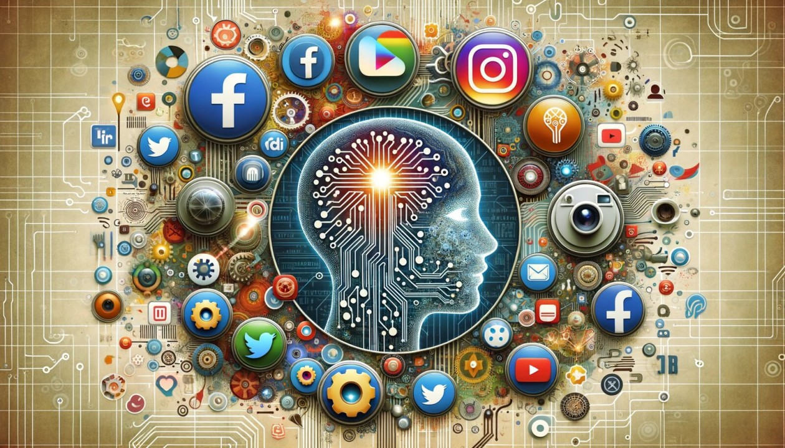

Impacto en la Salud Social
El impacto de la IA en la interacción humana también es significativo:
- Aislamiento social: La dependencia de las tecnologías basadas en IA para la interacción social, como las redes sociales o plataformas de mensajería, puede disminuir las interacciones cara a cara. Esto lleva al aislamiento social, ya que las personas pueden volverse más dependientes de las conexiones virtuales y perder la capacidad de mantener relaciones profundas y significativas en el mundo físico.
- Estrés por oportunidades laborales: La automatización impulsada por la IA ha generado inquietud sobre la pérdida de empleos en diversas industrias, especialmente en tareas repetitivas y manuales. La preocupación por el futuro laboral y la incertidumbre sobre qué trabajos serán reemplazados por máquinas puede generar altos niveles de estrés y ansiedad en muchos trabajadores, afectando su bienestar emocional y psicológico.
- Anulación de prácticas como la escritura, la oratoria y el razonamiento: : A medida que la IA asume tareas cognitivas, como la redacción de textos o la resolución de problemas complejos, las personas pueden volverse menos propensas a practicar habilidades como la escritura, la oratoria y el razonamiento crítico. Esto puede llevar a una disminución de la capacidad para expresarse de manera clara y reflexiva, reduciendo la agilidad mental y la habilidad para comunicarse de manera efectiva en contextos personales y profesionales.
Soluciones Propuestas
- Aumentar la interacción con otras personas: Fomentar reuniones presenciales y la participación en actividades comunitarias ayuda a fortalecer las relaciones humanas.
- Estrategias para garantizar un uso responsable de la IA: Gobiernos y empresas pueden regular el uso de la IA para evitar que desplace por completo a los trabajadores.
- Uso consciente y ético de la tecnología: Promover un balance entre el uso de la IA y la interacción humana puede reducir los impactos negativos en la sociedad.